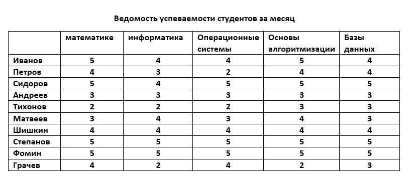
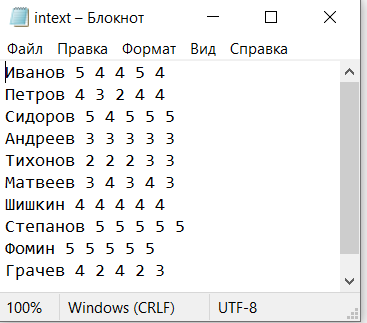
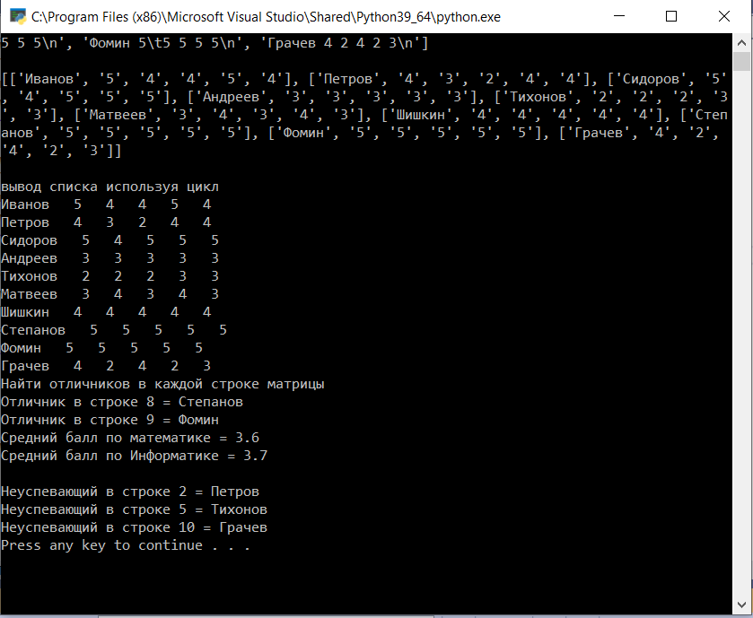

|
Контрольная работа 4. Работа с основными алгоритмами. Обработка
информации, массивов. Чтение, запись информации в файл. Решение задачи выполнить на языке Python. (списки) |
||
| Назад | ||
|
Каждая работа должна быть подписана фамилией. В программу выводится информация о ходе работы, В новый файл записать матрицу, последовательно каждое действие и итоговый результат. Сформирована ведомость успеваемости
  Составить программу назначения стипендии студентам (в группе 10 студентов) по результатам сессии (в сессии зачеты по: математике, информатикне, опереционным системам и два экзамена Основы алгоритмизации, Базы данных), используя следующие правила: Создать файл в котором включены данные ведомости например: 1. Определить средний балл по каждой дисциплине 2. Определить отличников 3. Составить список неуспевающих
 |
||
| Конспект подготовлен Бакулиным А. М. 2022 год. | ||